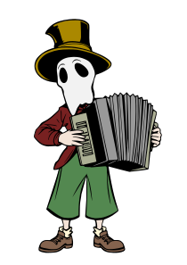
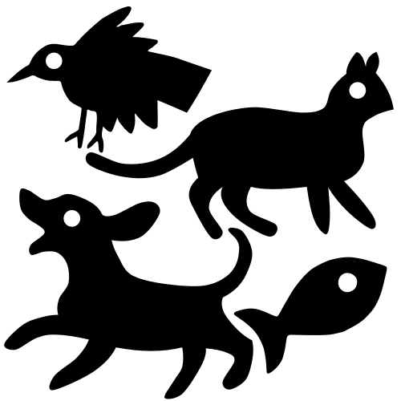
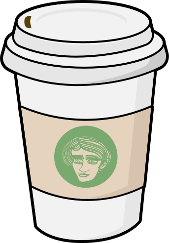
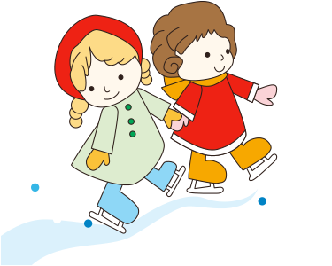
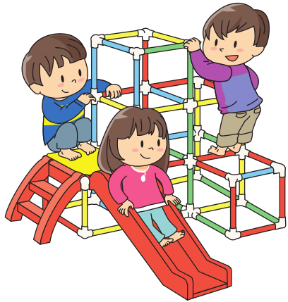

人教PEP版英语四年级 · 口语开口训练舱
四年级孩子从会答一句到能说一段
人教PEP四年级会答更会问豆包陪练
这是什么？
专为人教PEP版四年级孩子设计的英语开口训练舱。8 个同步单元——课程表与科目、时间与作息、天气与季节、职业与理想、食物与健康、运动与爱好、方位与问路、节日与庆祝。相比三年级，每一句都多走一步：回答问题之后要给出理由，描述图片之后要做一个推断。每单元 8 句核心句、1 段同伴对话、1 个看图说话任务、1 个原创小故事，全部配豆包陪练指令，每天 15 分钟，让孩子从"会答一句"走到"能说一段"。
适合谁
怎么用（3 步）
- 打开本页，选一个单元
- 先听句子跟读 3 遍，再看着中文说出英文
- 复制该单元的豆包指令，让豆包当陪练，孩子开口回答
单元 1 · 学校科目与课程表
School Subjects and Timetable
目标：会看课程表说出安排、说出喜欢或觉得难的科目并给出理由
🎬 示例视频
🎧 示例对话音频
🔑 核心句（关键练习）
- Which subject do you like best? I like science best.你最喜欢哪一科？我最喜欢科学。
- We have Chinese and English every morning.我们每天上午都有语文和英语。
- Science is on Wednesday afternoon, and I like it.科学课在星期三下午，我很喜欢。
- Maths is difficult, but I practise every day.数学很难，但我每天都练习。
- We have a break between the second and third classes.我们在第二节和第三节课之间休息。
- I often read in the library after lunch.我午饭后常常在图书馆看书。
- My classmates help me with my English words.我的同学帮我记英语单词。
- What do you usually do during the break?课间休息你通常做什么？
📚 本单元词汇
timetable 课程表
subject 科目
Monday 星期一
Wednesday 星期三
Friday 星期五
break 课间休息
interesting 有趣的
difficult 难的
practise 练习
learn 学习
词汇例句
- Our timetable changes every term.
- Which subject do you like best?
- We have music on Monday.
- Science is on Wednesday afternoon.
- We finish school early on Friday.
- We have a break at ten.
- Science is interesting and useful.
- Maths is difficult but I like it.
- I practise the piano after dinner.
- We learn many new words.
💬 情景对话
Miss Li
Look at the new timetable on the wall.看看墙上那张新的课程表。
Lily
We have science on Wednesday afternoon.我们星期三下午有科学课。
Miss Li
Do you like science, Tom?汤姆，你喜欢科学吗？
Tom
Yes. It is interesting but a little difficult.喜欢。它很有趣，但有点难。
Lily
I like English best. We learn many new words.我最喜欢英语。我们学很多新单词。
Miss Li
What do you do during the break?课间休息你们做什么？
Tom
I play football with my classmates in the playground.我和同学在操场上踢足球。
Lily
I often read story books in the school library.我常常在学校图书馆读故事书。
🖼️ 看图说话任务（P1–P5 分层）
图片描述：一间教室：墙上贴着一张课程表，桌上摆着科学课用的放大镜、几片树叶和一个玻璃杯，两个孩子凑在课程表前看，窗边有一个男孩在读书。
| 可见事实 | 合理推断 |
|---|---|
| 墙上贴着一张课程表 | Maybe they have science today, because there are leaves on the desk. |
| 桌上有一个放大镜和几片树叶 | I think the boy likes reading, because he reads during the break. |
| 桌上有一个玻璃杯 | |
| 两个孩子在看课程表 | |
| 窗边有一个男孩在读书 |
个人联想：Which subject do you find difficult? What do you do about it?
无法确认：我们看不清课程表上的具体时间，也听不到他们在说什么
本单元语言点：We have ... on ... / It is ... but ...
观察路线：
| 层级 | 任务要求 |
|---|---|
| P1 | 说出人和物：a timetable、a magnifier、some leaves、a boy |
| P2 | 用句框说 3-4 句：I can see ___. / We have ___ on ___. / He is ___ing. |
| P3 | 只看关键词 timetable / leaves / science / library，说 5-6 句 |
| P4 | 按"墙上—桌上—窗边"顺序说 6-10 句，用上一个连接词和一个 Maybe |
| P5 | 独立说完，再回答两个追问：Which subject is difficult for you? Why? |
句框：There is a ___ on the desk.
We have ___ on ___ afternoon.
The boy is ___ing by the window.
Maybe they have ___ because ___.
We have ___ on ___ afternoon.
The boy is ___ing by the window.
Maybe they have ___ because ___.
提问阶梯：What can you see in the classroom?
What is on the desk?
What are the two children doing?
Which subject do they have today? Why do you think so?
Which subject do you like best? Why?
What is on the desk?
What are the two children doing?
Which subject do they have today? Why do you think so?
Which subject do you like best? Why?
| 维度 | 达标 | 需要支持 |
|---|---|---|
| 事实准确 | 能说出 4 个以上真实存在的事物 | 需要提示才能说出 1-2 个 |
| 描述顺序 | 按空间顺序推进，不来回跳 | 想到什么说什么，听的人跟不上 |
| 句子完整 | 用完整句，主谓齐全 | 只说单词或短语 |
| 推断有证据 | 用 Maybe / I think ... because | 把猜测说成事实 |
📖 故事复述与表达（L1–L5 支架）
The Science Leaf
Tom finds a red leaf on the way to school.
He puts it on his desk.
Miss Li sees it in science class.
She says, "Leaves change colour in autumn."
Tom draws the leaf in his notebook.
He likes science more now.
Tom finds a red leaf on the way to school.
He puts it on his desk.
Miss Li sees it in science class.
She says, "Leaves change colour in autumn."
Tom draws the leaf in his notebook.
He likes science more now.
中文大意：汤姆在上学路上捡到一片红叶，把它放在桌上。科学课上李老师看到了，说"树叶在秋天会变色"。汤姆把这片叶子画进了笔记本，从此更喜欢科学了。
| 故事地图 | 内容 |
|---|---|
| 人物与情境 | Tom，一个四年级男孩，和教科学的 Miss Li |
| 想要什么 | 想知道这片叶子为什么会变红 |
| 遇到问题 | 汤姆觉得科学又难又远，不敢提问 |
| 如何解决 | 他把叶子带进课堂，老师借着它讲了一个知识点 |
| 结果与变化 | 汤姆开始主动观察，也更愿意学科学了 |
事件顺序：Tom finds a red leaf. → He puts it on his desk. → Miss Li sees it in class. → She explains why leaves change colour. → Tom draws the leaf in his notebook.
排序练习（顺序已打乱）：Miss Li sees it in class.
Tom finds a red leaf.
Tom draws the leaf in his notebook.
She explains why leaves change colour.
Tom finds a red leaf.
Tom draws the leaf in his notebook.
She explains why leaves change colour.
关键词：leaf / red / science / notebook / autumn
| 支架 | 做法 |
|---|---|
| L1 | 看着故事图，跟着老师说关键句：He likes science more now. |
| L2 | 看着图，用句框补全：Tom finds a ___. Miss Li says, "___." |
| L3 | 只看关键词 leaf / science / autumn / notebook，按顺序说 6 句 |
| L4 | 看着故事地图（人物—想做什么—问题—结果）自己讲一遍 |
| L5 | 只看标题《The Science Leaf》独立复述，并加一句自己观察到的小发现 |
连接词句框：First, Tom finds ___.
Then, he puts it ___.
After that, Miss Li says, "___."
Finally, Tom draws ___.
Then, he puts it ___.
After that, Miss Li says, "___."
Finally, Tom draws ___.
迁移表达：
换视角：换成那片叶子的视角讲：I fall from a tree in autumn.
说感受：汤姆为什么更喜欢科学了？从故事里找证据
新结局：如果汤姆把叶子随手扔掉了，故事会怎么变？
换视角：换成那片叶子的视角讲：I fall from a tree in autumn.
说感受：汤姆为什么更喜欢科学了？从故事里找证据
新结局：如果汤姆把叶子随手扔掉了，故事会怎么变？
🤖 豆包陪练指令（本单元）
请你扮演一位四年级的科学老师，和我的孩子练习"说科目与课程表"。规则：1）每次只问一个问题，语速中等，说完等孩子回答；2）孩子答完，你追问一句 Why?，引导他说出理由；3）理由说不完整时，给两个选项让他选，比如"是有趣还是不难？"；4）重点练 We have ... on ... / I like ... best, because ... / It is difficult but ...；5）最后让孩子说出自己一周的课表安排，说不出给句框；6）全程不批评、不纠错音，只鼓励他把句子说完整。
单元 2 · 时间与作息
Time and Daily Routines
目标：会说出一天的作息，会用 usually / always / never 说频率
🎬 示例视频
🎧 示例对话音频
🔑 核心句（关键练习）
- I get up at half past six every morning.我每天早上六点半起床。
- School starts at eight o'clock, so I hurry.学校八点上课，所以我很赶。
- It takes me fifteen minutes to walk to school.我步行上学要花十五分钟。
- I usually do my homework before dinner.我通常在晚饭前写作业。
- I always brush my teeth before I sleep.我睡觉前总是刷牙。
- I never watch TV on school days.上学日我从不看电视。
- We arrive at school early and read quietly.我们很早到校，然后安静地读书。
- What time do you usually go to bed?你通常几点睡觉？
📚 本单元词汇
routine 作息
o'clock …点钟
half past …点半
usually 通常
always 总是
never 从不
early 早的
hurry 匆忙
minute 分钟
tired 累的
词汇例句
- My daily routine is quite busy.
- School starts at eight o'clock.
- I get up at half past six.
- I usually walk to school.
- I always brush my teeth before bed.
- I never go to bed late.
- We arrive at school early.
- I hurry to school at seven forty.
- It takes me fifteen minutes.
- I feel tired after PE class.
💬 情景对话
Mum
Lily, it is half past six. Time to get up.莉莉，六点半了。该起床了。
Lily
Five more minutes, please. I am still tired.再睡五分钟吧。我还困着呢。
Mum
You have PE today. Please do not be late.你今天有体育课。请别迟到。
Lily
OK. What time does school start?好吧。学校几点开始上课？
Mum
School starts at eight o'clock.学校八点开始上课。
Lily
It takes me fifteen minutes to walk there.我走到那儿要十五分钟。
Mum
Then hurry up and finish your breakfast.那就快点把早饭吃完。
Lily
I will. I usually walk there with Tom.我会的。我通常和汤姆一起走。
🖼️ 看图说话任务（P1–P5 分层）

图片描述：一个孩子早晨的房间：床头闹钟指着六点半，椅子搭着校服，桌上有一碗面条，一个男孩一边看钟一边系鞋带，窗外天还没全亮。
| 可见事实 | 合理推断 |
|---|---|
| 闹钟指着六点半 | Maybe he will be late, because he is still tying his shoes. |
| 椅子上搭着校服 | I think he feels worried, because he keeps looking at the clock. |
| 桌上有一碗面条 | |
| 男孩一边看钟一边系鞋带 | |
| 窗外天色还很暗 |
个人联想：What time do you get up? How do you go to school?
无法确认：我们看不出他几点出门，也看不出他最后有没有迟到
本单元语言点：I ... at ... / It takes me ... / I usually ...
观察路线：
| 层级 | 任务要求 |
|---|---|
| P1 | 说出图里的时间和物品：a clock、a uniform、noodles、shoes |
| P2 | 用句框说 3-4 句：It is half past ___. / He is ___ing. / I usually ___ at ___. |
| P3 | 只看关键词 clock / six thirty / uniform / shoes，说 5-6 句 |
| P4 | 按"床—椅子—桌子—人—窗外"顺序说 6-10 句，加一个 Maybe |
| P5 | 独立说完，再回答：What time do you go to bed? 并说出自己三个时间点 |
句框：It is half past ___.
He is ___ing his shoes.
It takes me ___ minutes.
Maybe he is ___ because ___.
He is ___ing his shoes.
It takes me ___ minutes.
Maybe he is ___ because ___.
提问阶梯：What time is it in the picture?
What is the boy doing?
How does he feel? Why do you think so?
Is it still dark outside? What does that tell you?
What time do you usually get up?
What is the boy doing?
How does he feel? Why do you think so?
Is it still dark outside? What does that tell you?
What time do you usually get up?
| 维度 | 达标 | 需要支持 |
|---|---|---|
| 事实准确 | 时间、物品、动作都说对 | 把时间或动作说错 |
| 描述顺序 | 按空间或时间顺序说 | 东一句西一句 |
| 句子完整 | 用 It takes me ... / I usually ... 完整句 | 只报数字 |
| 推断有证据 | 用 Maybe / I think ... because | 直接下结论不给理由 |
📖 故事复述与表达（L1–L5 支架）
Fifteen Minutes
Tom gets up at half past six.
He eats noodles and drinks some milk.
Then he walks to school with Lily.
It usually takes them fifteen minutes.
Today they walk a little faster and arrive early.
They read books together before class.
Tom gets up at half past six.
He eats noodles and drinks some milk.
Then he walks to school with Lily.
It usually takes them fifteen minutes.
Today they walk a little faster and arrive early.
They read books together before class.
中文大意：汤姆六点半起床，吃了面条、喝了牛奶，然后和莉莉一起走路上学，平常要花十五分钟。今天他们走得快了些，早早就到了，上课前还一起读了会儿书。
| 故事地图 | 内容 |
|---|---|
| 人物与情境 | Tom 和 Lily，两个同路上学的四年级学生 |
| 想要什么 | 想早点到校，多一点读书时间 |
| 遇到问题 | 十五分钟的路说长不长，但他们总踩着点到 |
| 如何解决 | 今天互相提醒，走得比平时快 |
| 结果与变化 | 提前到校，还多出了安静读书的十分钟 |
事件顺序：Tom gets up at half past six. → He eats noodles and drinks milk. → They walk to school together. → They arrive early and read books.
排序练习（顺序已打乱）：They walk to school together.
Tom gets up at half past six.
They arrive early and read books.
He eats noodles and drinks milk.
Tom gets up at half past six.
They arrive early and read books.
He eats noodles and drinks milk.
关键词：half past six / noodles / walk / fifteen minutes / early
| 支架 | 做法 |
|---|---|
| L1 | 看图跟读：It takes them fifteen minutes to walk to school. |
| L2 | 用句框补时间和动作：Tom gets up at ___. Then he ___. |
| L3 | 只看关键词 half past six / noodles / fifteen minutes / early 说完整句 |
| L4 | 看故事地图讲一遍（谁—想做什么—问题—结果） |
| L5 | 只看标题独立讲，并说出自己上学的路要花多久 |
连接词句框：First, Tom gets up at ___.
Then, he eats ___.
After that, they walk to ___.
Finally, they ___.
Then, he eats ___.
After that, they walk to ___.
Finally, they ___.
迁移表达：
换视角：换成闹钟的视角讲：I ring at half past six every morning.
说感受：他们为什么能提前到校？从故事里找证据
新结局：如果今天下雨了，他们的路上会发生什么？
换视角：换成闹钟的视角讲：I ring at half past six every morning.
说感受：他们为什么能提前到校？从故事里找证据
新结局：如果今天下雨了，他们的路上会发生什么？
🤖 豆包陪练指令（本单元）
请你扮演一位会聊天的作息管理教练，和我的孩子练习"说时间与作息"。规则：1）先问 What time do you get up / go to school / go to bed?，一句一句来；2）每个回答后追问 How long does it take?；3）孩子答不出给中文提示，再不行给完整句跟读两遍；4）重点练 I ... at half past ... / It takes me ... minutes / I usually ...；5）最后让孩子用 usually、always、never 各说一句自己的习惯；6）全程不催促、不纠错音，先肯定再说下一点。
单元 3 · 天气与季节
Weather and Seasons
目标：会描述天气和温度、说出不同季节的活动安排
🎬 示例视频
🎧 示例对话音频
🔑 核心句（关键练习）
- What is the weather like in your city?你们城市的天气怎么样？
- It is sunny today, so we can play outside.今天是晴天，所以我们可以在外面玩。
- The weather forecast says it will rain tomorrow.天气预报说明天会下雨。
- It is about twenty degrees this afternoon.今天下午大约二十度。
- Take your umbrella, because it is rainy today.带上伞，因为今天下雨。
- Autumn is my favourite season, because it is cool.秋天是我最爱的季节，因为很凉爽。
- In winter, it often snows in the north.冬天北方常常下雪。
- We wear light clothes when it is hot.天热的时候我们穿薄一点的衣服。
📚 本单元词汇
weather 天气
forecast 天气预报
temperature 温度
degree 度
sunny 晴朗的
rainy 下雨的
autumn 秋天
season 季节
umbrella 雨伞
clothes 衣服
词汇例句
- What is the weather like today?
- The forecast says it will rain.
- The temperature is about twenty degrees.
- It is twenty degrees this afternoon.
- It is sunny and warm today.
- It is rainy in early summer.
- Autumn is cool and dry here.
- Which season do you like best?
- Take your umbrella with you.
- We wear light clothes in summer.
💬 情景对话
Tom
What is the weather like today?今天天气怎么样？
Lily
It is sunny and a little windy.晴，还有点风。
Tom
Is it hot? I want to play outside.热吗？我想出去玩。
Lily
It is about twenty degrees. That is quite cool.大约二十度，挺凉快的。
Tom
Good. Do you have an umbrella?好。你带伞了吗？
Lily
Yes. The forecast says rain tomorrow.带了。预报说明天有雨。
Tom
Which season do you like best?你最喜欢哪个季节？
Lily
I like autumn, because the leaves turn red.我喜欢秋天，因为树叶会变红。
🖼️ 看图说话任务（P1–P5 分层）
图片描述：一个窗边的场景：窗外下着大雨，玻璃上挂着雨点，窗台上放着一个温度计指着十八度，桌上放着一把雨伞和一杯热牛奶，一个女孩正伸手关窗。
| 可见事实 | 合理推断 |
|---|---|
| 窗外下着大雨 | Maybe it is cold today, because the girl is closing the window. |
| 玻璃上挂着雨点 | I think she will take the umbrella when she goes out. |
| 窗台上放着一个温度计 | |
| 桌上放着一把雨伞和一杯热牛奶 | |
| 一个女孩正在关窗 |
个人联想：What do you wear on a rainy day?
无法确认：我们看不出温度具体是几度，也看不出女孩要去哪里
本单元语言点：It is ... / I think ... because ...
观察路线：
| 层级 | 任务要求 |
|---|---|
| P1 | 说出天气和物品：rain、a thermometer、an umbrella、hot milk |
| P2 | 用句框说 3-4 句：It is ___ outside. / I can see a ___ on the ___. |
| P3 | 只看关键词 rain / thermometer / umbrella / window，说 5-6 句 |
| P4 | 按"窗外—玻璃—窗台—桌上—人"顺序说 6-10 句，加一个 Maybe |
| P5 | 独立说完，再回答：What do you do on a rainy day? 并说出自己的安排 |
句框：It is ___ outside.
There is a ___ on the ___.
The girl is ___ing the window.
I think she ___ because ___.
There is a ___ on the ___.
The girl is ___ing the window.
I think she ___ because ___.
提问阶梯：What is the weather like in the picture?
What can you see on the window?
What is on the desk?
Why is the girl closing the window?
What do you usually do on a rainy day?
What can you see on the window?
What is on the desk?
Why is the girl closing the window?
What do you usually do on a rainy day?
| 维度 | 达标 | 需要支持 |
|---|---|---|
| 事实准确 | 说的天气和物品都对 | 凭空加图里没有的东西 |
| 描述顺序 | 按从外到内的顺序说 | 跳来跳去 |
| 句子完整 | 用 It is ... / There is ... 完整句 | 只说单词 |
| 推断有证据 | 用 Maybe / I think ... because | 把猜测说成事实 |
📖 故事复述与表达（L1–L5 支架）
The Rainy Morning
Lily looks out of the window after breakfast.
It is raining very hard outside.
She takes her umbrella and her rain boots.
On the way, she sees a small cat under a tree.
She holds the umbrella over the wet cat.
The cat is safe, and Lily is happy.
Lily looks out of the window after breakfast.
It is raining very hard outside.
She takes her umbrella and her rain boots.
On the way, she sees a small cat under a tree.
She holds the umbrella over the wet cat.
The cat is safe, and Lily is happy.
中文大意：早饭后莉莉看向窗外，外面雨下得很大。她带上雨伞和雨靴出门，路上看见一只小猫躲在树下。她把伞撑在小猫头上，小猫安全了，莉莉也很开心。
| 故事地图 | 内容 |
|---|---|
| 人物与情境 | Lily，一个下雨天出门的四年级女孩 |
| 想要什么 | 想按时到校又不淋湿 |
| 遇到问题 | 雨太大，路上还有一只被淋湿的小猫 |
| 如何解决 | 她把自己的伞让给了小猫 |
| 结果与变化 | 小猫平安，莉莉虽然淋湿了一点，但心里很高兴 |
事件顺序：Lily looks out of the window. → It is raining very hard. → She sees a small cat under a tree. → She holds the umbrella over the cat. → The cat is safe.
排序练习（顺序已打乱）：She sees a small cat under a tree.
Lily looks out of the window.
The cat is safe.
She holds the umbrella over the cat.
Lily looks out of the window.
The cat is safe.
She holds the umbrella over the cat.
关键词：rain / umbrella / boots / cat / safe
| 支架 | 做法 |
|---|---|
| L1 | 看图跟读：She holds the umbrella over the wet cat. |
| L2 | 用句框补全：It is ___. She takes her ___. |
| L3 | 只看关键词 rain / umbrella / cat / safe 按顺序说完整句 |
| L4 | 看故事地图讲一遍 |
| L5 | 只看标题独立讲，并说出自己下雨天做过的一件小事 |
连接词句框：First, Lily looks ___.
Then, it is ___.
After that, she sees ___.
Finally, she ___.
Then, it is ___.
After that, she sees ___.
Finally, she ___.
迁移表达：
换视角：换成那只小猫的视角讲：I am wet and cold under the tree.
说感受：莉莉为什么自己淋湿了还开心？从故事里找证据
新结局：如果莉莉没带伞，她还能怎么帮小猫？
换视角：换成那只小猫的视角讲：I am wet and cold under the tree.
说感受：莉莉为什么自己淋湿了还开心？从故事里找证据
新结局：如果莉莉没带伞，她还能怎么帮小猫？
🤖 豆包陪练指令（本单元）
请你扮演一位电视台的天气预报员，和我的孩子练习"说天气与季节"。规则：1）开场给一句天气播报，让孩子跟着复述；2）再问 Which season do you like best? Why? 要求说出两个理由；3）孩子说不出理由时给中文提示，比如"是因为天气，还是因为能做的事？"；4）重点练 It is ... / It is about ... degrees / I like ... because ...；5）最后让孩子说出自己在不同季节会穿什么；6）全程中文辅助，鼓励开口，不纠错音。
单元 4 · 职业与理想
Jobs and Dreams
目标：会说出想做的职业和理由、说出为梦想打算做的事
🎬 示例视频
🎧 示例对话音频
🔑 核心句（关键练习）
- What do you want to be in the future?你将来想做什么？
- I want to be a scientist, because I love experiments.我想当科学家，因为我喜欢做实验。
- A vet takes care of sick animals every day.兽医每天照顾生病的动物。
- Firefighters keep our city safe all year round.消防员一年到头守护着城市的安全。
- My dream is to fly a big plane one day.我的梦想是有一天能开大飞机。
- To be a pilot, I must study hard and stay healthy.想当飞行员，我必须努力学习、保持健康。
- My best friend wants to be an artist.我最好的朋友想成为一名画家。
- Every job needs practice, patience and a kind heart.每一份工作都需要练习、耐心和一颗善心。
📚 本单元词汇
dream 梦想
doctor 医生
vet 兽医
pilot 飞行员
firefighter 消防员
scientist 科学家
artist 画家
practise 练习
patient 有耐心的
future 将来
词汇例句
- My dream is to fly a plane.
- A doctor takes care of sick people.
- A vet looks after sick animals.
- A pilot flies planes to many cities.
- Firefighters keep our city safe.
- A scientist does experiments every day.
- An artist draws pictures for books.
- I practise drawing every weekend.
- Good doctors are kind and patient.
- What do you want to be in the future?
💬 情景对话
Miss Li
Today we are going to talk about our dreams.今天我们来聊聊自己的梦想。
Tom
I want to be a pilot when I grow up.我长大后想当一名飞行员。
Miss Li
Why do you want to be a pilot?你为什么想当飞行员？
Tom
Because I want to fly a big plane over the sea.因为我想开大飞机飞过大海。
Lily
I want to be a vet, because I love animals.我想当兽医，因为我喜欢动物。
Miss Li
That is a kind dream. What will you do now?这是个善良的梦想。你现在会做些什么？
Lily
I will read one book about animals every month.我每个月读一本关于动物的书。
Miss Li
Great. Dreams need practice and patience.很棒。梦想需要练习和耐心。
🖼️ 看图说话任务（P1–P5 分层）

图片描述：一间教室的"职业日"：一个孩子戴着飞行员的帽子站在讲台前讲话，墙上贴着消防员、医生、画家和兽医四张图片，台下好几个孩子举着手，讲台上放着一本打开的书。
| 可见事实 | 合理推断 |
|---|---|
| 一个孩子戴着飞行员帽子站在讲台前 | Maybe today is a career day, because there are job pictures on the wall. |
| 墙上贴着四张职业图片 | I think the children are curious, because so many hands are up. |
| 台下有好几个孩子举着手 | |
| 讲台上放着一本打开的书 | |
| 黑板上写着一行英文 |
个人联想：What do you want to be? What will you do for it?
无法确认：我们听不清台上那个孩子在说什么，也看不出他们的名字
本单元语言点：I want to be ... because ... / I will ...
观察路线：
| 层级 | 任务要求 |
|---|---|
| P1 | 说出四种职业：a pilot、a doctor、an artist、a vet |
| P2 | 用句框说 3-4 句：I can see a ___. / He wants to be a ___. |
| P3 | 只看关键词 pilot / pictures / hands / career，说 5-6 句 |
| P4 | 按"台上—墙上—台下"顺序说 6-10 句，加一个 Maybe |
| P5 | 独立说完，再回答：What do you want to be? Why? 并说一件现在能做的事 |
句框：There is a ___ on the wall.
The boy wants to be a ___.
Many children are ___ing their hands.
I think they are ___ because ___.
The boy wants to be a ___.
Many children are ___ing their hands.
I think they are ___ because ___.
提问阶梯：What can you see in the classroom?
What is the boy wearing?
What jobs are on the wall?
Why are the children putting up their hands?
What do you want to be? Why?
What is the boy wearing?
What jobs are on the wall?
Why are the children putting up their hands?
What do you want to be? Why?
| 维度 | 达标 | 需要支持 |
|---|---|---|
| 事实准确 | 说的职业和动作都对 | 把没看到的职业也说成"有" |
| 描述顺序 | 按台上到台下的顺序说 | 东一句西一句 |
| 句子完整 | 用 I want to be ... 完整句 | 只说职业名称 |
| 推断有证据 | 用 Maybe / I think ... because | 直接下结论不给理由 |
📖 故事复述与表达（L1–L5 支架）
The Boy Who Wants to Fly
Tom wants to be a pilot one day.
He makes a paper plane in the classroom.
It flies far and hits the window.
His classmates laugh, and Tom feels sad.
Miss Li says, "Pilots never give up after one try."
Tom makes a better plane and smiles again.
Tom wants to be a pilot one day.
He makes a paper plane in the classroom.
It flies far and hits the window.
His classmates laugh, and Tom feels sad.
Miss Li says, "Pilots never give up after one try."
Tom makes a better plane and smiles again.
中文大意：汤姆想有一天当上飞行员。他在教室里折了架纸飞机，飞机飞出去撞到窗户。同学们笑了起来，汤姆有点难过。李老师对他说"飞行员试一次就放弃可不行的"，汤姆重新折了一架更好的，又笑了。
| 故事地图 | 内容 |
|---|---|
| 人物与情境 | Tom，一个梦想当飞行员的四年级男孩 |
| 想要什么 | 想做出一架飞得又远又稳的纸飞机 |
| 遇到问题 | 第一次试飞就撞窗，同学还笑话了他 |
| 如何解决 | 老师提醒他飞行员不能一次就放弃，他重新折了一架 |
| 结果与变化 | 新飞机飞得更远，汤姆也更确定自己的梦想 |
事件顺序：Tom makes a paper plane. → It flies far and hits the window. → His classmates laugh at him. → Miss Li tells him to try again. → He makes a better plane.
排序练习（顺序已打乱）：His classmates laugh at him.
Tom makes a paper plane.
He makes a better plane.
Miss Li tells him to try again.
Tom makes a paper plane.
He makes a better plane.
Miss Li tells him to try again.
关键词：pilot / paper plane / window / laugh / try again
| 支架 | 做法 |
|---|---|
| L1 | 看图跟读：Tom makes a better plane and smiles again. |
| L2 | 用句框补全：Tom wants to be a ___. He makes a ___. |
| L3 | 只看关键词 pilot / plane / laugh / try again 按顺序说完整句 |
| L4 | 看故事地图讲一遍 |
| L5 | 只看标题独立讲，并说出自己为梦想做过的一件小事 |
连接词句框：First, Tom wants to be ___.
Then, he makes ___.
After that, Miss Li says, "___."
Finally, Tom ___.
Then, he makes ___.
After that, Miss Li says, "___."
Finally, Tom ___.
迁移表达：
换视角：换成那架纸飞机的视角讲：I fly far and hit the window.
说感受：汤姆为什么又笑了？从故事里找证据
新结局：如果同学们那时候给他鼓掌，故事会怎么变？
换视角：换成那架纸飞机的视角讲：I fly far and hit the window.
说感受：汤姆为什么又笑了？从故事里找证据
新结局：如果同学们那时候给他鼓掌，故事会怎么变？
🤖 豆包陪练指令（本单元）
请你扮演一位带孩子参观"职业体验馆"的讲解员，和我的孩子练习"说职业与理想"。规则：1）每次介绍一种职业，说一句 A ... does ...；2）问 Do you want to be a ...? 让孩子用 Yes, because ... 或 No, because ... 回答；3）孩子说不出理由给中文提示和句框 I want to be ... because ...；4）重点练 want to be / because / I will ...；5）最后让孩子说出为实现梦想现在能做的一件事；6）全程中文辅助，不纠错音，鼓励他把理由说完整。
单元 5 · 食物与健康
Food and Health
目标：会谈论学校餐食、说出健康饮食的简单建议
🎬 示例视频
🎧 示例对话音频
🔑 核心句（关键练习）
- A healthy breakfast gives me energy for the whole morning.一顿健康的早餐给我一上午的能量。
- I eat vegetables at lunch and dinner every day.我午饭和晚饭都吃蔬菜。
- Too much sugar is really bad for your teeth.太多糖真的对牙齿不好。
- I drink water when I feel thirsty after running.跑步后口渴时我就喝水。
- Our school menu has rice, vegetables, eggs and soup.我们学校的菜单有米饭、蔬菜、鸡蛋和汤。
- Do you eat any fruit between your meals?你两餐之间会吃点水果吗？
- Exercise and good food keep us strong and happy.运动加上好的食物让我们既强壮又开心。
- I try to eat less fried food this term.这学期我尽量少吃油炸食品。
📚 本单元词汇
healthy 健康的
vegetable 蔬菜
fruit 水果
sugar 糖
breakfast 早餐
menu 菜单
thirsty 渴的
strong 强壮的
fried 油炸的
soup 汤
词汇例句
- Healthy food gives us energy.
- I eat vegetables at lunch and dinner.
- Fruit is a good snack for children.
- Too much sugar is bad for teeth.
- A good breakfast helps me listen in class.
- What is on the menu today?
- I drink water when I feel thirsty.
- Exercise and vegetables keep us strong.
- I do not eat much fried food now.
- We have rice, vegetables and soup.
💬 情景对话
Tom
What is on the menu today?今天菜单上有什么？
Lily
We have rice, vegetables, eggs and soup.有米饭、蔬菜、鸡蛋和汤。
Tom
Do you eat vegetables every single day?你每天都吃蔬菜吗？
Lily
Yes. Vegetables keep us strong and healthy.吃呀。蔬菜让我们强壮又健康。
Tom
I do not like carrots very much, to be honest.说实话，我不太喜欢胡萝卜。
Lily
Then you can try tomatoes or green beans.那你可以试试番茄或者青豆。
Tom
All right. I will drink more water too.好吧。我也会多喝水。
Lily
Good idea. Too much sugar is bad for us.好主意。吃太多糖对身体不好。
🖼️ 看图说话任务（P1–P5 分层）

图片描述：学校食堂：一个餐盘里盛着米饭、青菜、鸡蛋和一小碗汤，旁边摆着一盘切好的水果，墙上贴着一张"健康饮食金字塔"图，一个男孩正端着餐盘走向座位。
| 可见事实 | 合理推断 |
|---|---|
| 餐盘里有米饭、青菜和鸡蛋 | Maybe the school cares about healthy food, because the food pyramid is on the wall. |
| 餐盘里还有一小碗汤 | I think the boy is hungry, because his plate is quite full. |
| 旁边摆着一盘切好的水果 | |
| 墙上贴着一张饮食金字塔图 | |
| 一个男孩端着餐盘走向座位 |
个人联想：What do you usually eat for lunch at school?
无法确认：我们看不出菜的味道如何，也看不出他会不会全部吃完
本单元语言点：There is / There are ... / ... is good for ...
观察路线：
| 层级 | 任务要求 |
|---|---|
| P1 | 说出餐盘里的食物：rice、green vegetables、eggs、soup、fruit |
| P2 | 用句框说 3-4 句：There is some ___ on the plate. / I can see a ___. |
| P3 | 只看关键词 rice / vegetables / soup / fruit / menu，说 5-6 句 |
| P4 | 按"餐盘—旁边—墙上—人"顺序说 6-10 句，加一个 Maybe |
| P5 | 独立说完，再回答：Is this a healthy lunch? Why? 并说出自己的理由 |
句框：There is some ___ on the plate.
There is a ___ on the wall.
The boy is ___ing his plate.
I think ___ because ___.
There is a ___ on the wall.
The boy is ___ing his plate.
I think ___ because ___.
提问阶梯：What is on the plate?
What is next to the plate?
What is on the wall?
Is this a healthy meal? Why do you think so?
What do you eat for lunch at school?
What is next to the plate?
What is on the wall?
Is this a healthy meal? Why do you think so?
What do you eat for lunch at school?
| 维度 | 达标 | 需要支持 |
|---|---|---|
| 事实准确 | 说的食物和数量都对 | 凭空加图里没有的食物 |
| 描述顺序 | 按从餐盘到墙面的顺序说 | 想到哪说到哪 |
| 句子完整 | 用 There is / There are 完整句 | 只说食物单词 |
| 推断有证据 | 用 Maybe / I think ... because | 只说"很健康"却不给理由 |
📖 故事复述与表达（L1–L5 支架）
Two Lunches
Tom buys chips and cola for lunch on Monday.
He feels tired during the afternoon class.
On Tuesday, he takes rice, vegetables and soup.
He runs much faster in his PE class.
After that, Tom eats more vegetables every day.
His teacher says he looks stronger now.
Tom buys chips and cola for lunch on Monday.
He feels tired during the afternoon class.
On Tuesday, he takes rice, vegetables and soup.
He runs much faster in his PE class.
After that, Tom eats more vegetables every day.
His teacher says he looks stronger now.
中文大意：星期一汤姆午饭买了薯片和可乐，下午上课一直犯困。星期二他打了米饭、蔬菜和汤，体育课上跑得快多了。从那以后汤姆每天都多吃蔬菜，老师说他看起来结实了不少。
| 故事地图 | 内容 |
|---|---|
| 人物与情境 | Tom，一个午饭爱挑食的四年级男孩 |
| 想要什么 | 想知道午饭到底会不会影响自己 |
| 遇到问题 | 他一直觉得吃什么都无所谓 |
| 如何解决 | 用两天做了个对比，亲眼看到差别 |
| 结果与变化 | 他开始主动选蔬菜，也更相信"吃对了才有劲" |
事件顺序：Tom buys chips and cola on Monday. → He feels tired in the afternoon. → He eats rice and vegetables on Tuesday. → He runs faster in PE class. → He eats more vegetables after that.
排序练习（顺序已打乱）：He eats rice and vegetables on Tuesday.
Tom buys chips and cola on Monday.
He runs faster in PE class.
He feels tired in the afternoon.
Tom buys chips and cola on Monday.
He runs faster in PE class.
He feels tired in the afternoon.
关键词：chips / cola / tired / vegetables / faster / stronger
| 支架 | 做法 |
|---|---|
| L1 | 看图跟读：He runs much faster in his PE class. |
| L2 | 用句框补全：Tom eats ___. He feels ___. |
| L3 | 只看关键词 chips / tired / vegetables / faster 按顺序说完整句 |
| L4 | 看故事地图讲一遍 |
| L5 | 只看标题独立讲，并说出自己这几天吃过的健康食物 |
连接词句框：First, Tom buys ___.
Then, he feels ___.
After that, he eats ___.
Finally, he ___.
Then, he feels ___.
After that, he eats ___.
Finally, he ___.
迁移表达：
换视角：换成那份蔬菜的视角讲：I sit on Tom's plate on Tuesday.
说感受：汤姆为什么改变了？从故事里找证据
新结局：如果第一天和第二天他吃的东西一样，故事会怎么变？
换视角：换成那份蔬菜的视角讲：I sit on Tom's plate on Tuesday.
说感受：汤姆为什么改变了？从故事里找证据
新结局：如果第一天和第二天他吃的东西一样，故事会怎么变？
🤖 豆包陪练指令（本单元）
请你扮演学校食堂的营养师，和我的孩子练习"说食物与健康"。规则：1）先问 What do you have for lunch today?；2）孩子答完你追问 Is it healthy? Why?，引导他说出理由；3）孩子说不出理由时给中文提示，比如"因为有蔬菜，还是因为有汤？"；4）重点练 There is / There are ... 和 ... is good / bad for ...；5）最后让孩子给自己设计一份健康午餐，说出三样东西；6）全程中文辅助，不纠错音，鼓励他把理由说完整。
单元 6 · 运动与爱好
Sports and Hobbies
目标：会说自己的爱好和练习频率、会邀请别人一起参加
🎬 示例视频
🎧 示例对话音频
🔑 核心句（关键练习）
- My hobby is collecting stamps from different cities.我的爱好是收集不同城市的邮票。
- I practise the guitar for thirty minutes every evening.我每天晚上练三十分钟吉他。
- Our school football team has a match on Saturday.我们校足球队星期六有一场比赛。
- Do you want to join the art club with me?你想和我一起加入美术社吗？
- I skate in the park when the weather is cool.天气凉快的时候我在公园滑冰。
- Playing volleyball is fun and keeps me strong.打排球很有趣，也让我更强壮。
- I never miss a swimming lesson in the summer.夏天我从不错过任何一节游泳课。
- How often do you practise your hobby every week?你的爱好一周练习多少次？
📚 本单元词汇
hobby 爱好
practise 练习
team 队
match 比赛
volleyball 排球
skate 滑冰
collect 收集
stamp 邮票
guitar 吉他
join 加入
词汇例句
- My hobby is collecting stamps.
- I practise the guitar every evening.
- Our school team has a match on Saturday.
- The match starts at three in the afternoon.
- We play volleyball in the school club.
- I skate in the park when it is cool.
- I collect stamps from different cities.
- She keeps her stamps in a big book.
- He plays the guitar in the school band.
- Do you want to join the art club?
💬 情景对话
Lily
Tom, what is your hobby these days?汤姆，你最近有什么爱好？
Tom
I collect stamps. I have about forty now.我集邮。现在有四十张左右。
Lily
Forty! Where do you get them from?四十张！你从哪儿弄来的？
Tom
Some are from my friends, and some from the post office.有些是朋友给的，有些是从邮局买的。
Lily
Do you still play football after school?你放学后还踢足球吗？
Tom
Yes. Our team has a match this Saturday.踢呀。我们队这星期六有比赛。
Lily
Can I come and watch the match?我能来看比赛吗？
Tom
Sure. Come at three in the afternoon.当然。下午三点来吧。
🖼️ 看图说话任务（P1–P5 分层）

图片描述：学校社团活动室：一个男孩抱着吉他在调音，一个女孩把邮票贴进集邮册，桌上放着一个排球和一块滑板，墙上挂着一张足球比赛的照片，地上散落着几支彩笔。
| 可见事实 | 合理推断 |
|---|---|
| 一个男孩抱着一把吉他 | Maybe this is a hobby club room, because everyone is doing something different. |
| 一个女孩在往集邮册里贴邮票 | I think the girl likes travelling, because she collects stamps from many cities. |
| 桌上放着一个排球和一块滑板 | |
| 墙上挂着一张足球比赛的照片 | |
| 地上有几支彩笔 |
个人联想：What is your hobby? How often do you practise it?
无法确认：我们听不到吉他弹得怎么样，也看不出那张照片是什么时候拍的
本单元语言点：I practise ... / How often do you ...?
观察路线：
| 层级 | 任务要求 |
|---|---|
| P1 | 说出四种活动和物品：a guitar、stamps、a volleyball、a skateboard |
| P2 | 用句框说 3-4 句：The boy is ___ing. / There is a ___ on the table. |
| P3 | 只看关键词 guitar / stamps / volleyball / photo，说 5-6 句 |
| P4 | 按"人—桌上—墙上—地上"顺序说 6-10 句，加一个 Maybe |
| P5 | 独立说完，再回答：What is your hobby? How often do you practise? |
句框：The girl is ___ing stamps.
There is a ___ on the table.
There is a photo of ___ on the wall.
I think ___ because ___.
There is a ___ on the table.
There is a photo of ___ on the wall.
I think ___ because ___.
提问阶梯：What are the children doing?
What is on the table?
What is on the wall?
Why do you think this is a club room?
What is your hobby? How often do you practise it?
What is on the table?
What is on the wall?
Why do you think this is a club room?
What is your hobby? How often do you practise it?
| 维度 | 达标 | 需要支持 |
|---|---|---|
| 事实准确 | 说的活动和物品都对 | 把没做的活动说成"在做" |
| 描述顺序 | 按空间顺序说 | 跳来跳去 |
| 句子完整 | 用 ... is ...ing 完整句 | 只说物品名称 |
| 推断有证据 | 用 Maybe / I think ... because | 直接下结论不给理由 |
📖 故事复述与表达（L1–L5 支架）
Saturday's Match
Tom's team has an important match on Saturday.
It rains hard before the game begins.
Tom wants to stay at home and watch TV.
His friend calls and says, "We really need you!"
Tom runs to the field in the rain.
Their team wins, and Tom feels proud.
Tom's team has an important match on Saturday.
It rains hard before the game begins.
Tom wants to stay at home and watch TV.
His friend calls and says, "We really need you!"
Tom runs to the field in the rain.
Their team wins, and Tom feels proud.
中文大意：汤姆的球队星期六有一场重要比赛。开赛前下起了大雨，汤姆想待在家里看电视。朋友打电话来说"我们真的需要你"，汤姆冒雨跑到了球场。他们队赢了，汤姆很自豪。
| 故事地图 | 内容 |
|---|---|
| 人物与情境 | Tom 和他的队友们 |
| 想要什么 | 想赢下星期六那场重要比赛 |
| 遇到问题 | 大雨打湿了球场，汤姆打了退堂鼓 |
| 如何解决 | 队友一个电话把他叫回了球场 |
| 结果与变化 | 球队赢了，汤姆也明白了"团队需要我"这句话的分量 |
事件顺序：Tom's team has a match on Saturday. → It rains hard before the game. → Tom wants to stay at home. → His friend calls and asks him to come. → Their team wins the match.
排序练习（顺序已打乱）：His friend calls and asks him to come.
Tom's team has a match on Saturday.
Their team wins the match.
Tom wants to stay at home.
Tom's team has a match on Saturday.
Their team wins the match.
Tom wants to stay at home.
关键词：match / Saturday / rain / friend / win / proud
| 支架 | 做法 |
|---|---|
| L1 | 看图跟读：Tom runs to the field in the rain. |
| L2 | 用句框补全：It rains ___. Tom wants to ___. |
| L3 | 只看关键词 match / rain / friend / win 按顺序说完整句 |
| L4 | 看故事地图讲一遍 |
| L5 | 只看标题独立讲，并说出自己坚持做过的一件事 |
连接词句框：First, Tom's team has ___.
Then, it rains ___.
After that, his friend says, "___!"
Finally, their team ___.
Then, it rains ___.
After that, his friend says, "___!"
Finally, their team ___.
迁移表达：
换视角：换成那个队友的视角讲：I call Tom because we need him.
说感受：汤姆为什么最后觉得自豪？从故事里找证据
新结局：如果雨大到比赛取消了，故事会怎么变？
换视角：换成那个队友的视角讲：I call Tom because we need him.
说感受：汤姆为什么最后觉得自豪？从故事里找证据
新结局：如果雨大到比赛取消了，故事会怎么变？
🤖 豆包陪练指令（本单元）
请你扮演一位学校社团的学长，和我的孩子练习"说爱好与运动"。规则：1）先问 What is your hobby?；2）再追问 How often do you practise?，引导他说出次数；3）孩子答不出给中文提示和句框 I practise ... twice a week；4）重点练 My hobby is ... / I practise ... / How often ...?；5）最后让孩子邀请你一起参加，用上 Do you want to ...?；6）全程中文辅助，不纠错音，鼓励他把频率说清楚。
单元 7 · 方位与问路
Directions
目标：会在街区里问路和指路、说出交通方式
🎬 示例视频
🎧 示例对话音频
🔑 核心句（关键练习）
- Excuse me, how can I get to the museum?打扰一下，请问博物馆怎么走？
- Go straight along this road for two blocks.沿着这条路直走两个街区。
- Turn left at the traffic lights, and you will see it.在红绿灯处左转，你就能看到它。
- The museum is opposite the big bookshop on this road.博物馆在这条路上那家大书店的对面。
- Walk past the bank, and the entrance is on your left.走过银行，入口就在你左手边。
- Is it far from here? It is about ten minutes on foot.离这儿远吗？走路大约十分钟。
- You can also take the number five bus from here.你也可以从这里坐五路公交车。
- Thank you so much. Have a nice day.太谢谢您了。祝您今天愉快。
📚 本单元词汇
corner 拐角
cross 穿过
traffic lights 红绿灯
opposite 在…对面
straight 直地
block 街区
museum 博物馆
entrance 入口
far 远的
bus stop 公交站
词汇例句
- Turn left at the next corner.
- Cross the road at the traffic lights.
- Wait for the green light, please.
- The museum is opposite the big bookshop.
- Go straight along this road.
- Walk for two blocks and you will see it.
- How can I get to the museum?
- The entrance is on your left.
- Is it far from here?
- There is a bus stop near the bank.
💬 情景对话
Lily
Excuse me, how can I get to the city museum?打扰一下，请问去市博物馆怎么走？
Woman
Go straight and turn left at the traffic lights.一直走，在红绿灯那里左转。
Lily
Is it far from here?离这儿远吗？
Woman
No. It is about ten minutes on foot.不远。走路大概十分钟。
Lily
Is it opposite the big bookshop on that road?它是在那条路上那家大书店的对面吗？
Woman
Yes. You cannot miss the red building there.对。你会看到那栋红色的楼，很好找。
Lily
Can I take a bus there instead?我可以改坐公交车去吗？
Woman
Sure. Take the number five bus and get off at the bank.可以。坐五路车，在银行那一站下车。
🖼️ 看图说话任务（P1–P5 分层）

图片描述：一幅街区地图：中间是十字路口和红绿灯，一角画着一座博物馆，博物馆对面是一家大书店，旁边有银行和公交站，一个女孩拿着地图站在路口。
| 可见事实 | 合理推断 |
|---|---|
| 中间是一个十字路口 | Maybe the girl is lost, because she keeps looking at her map. |
| 路口画着红绿灯 | I think she will cross the road, because she is standing at the corner. |
| 一角有一座博物馆 | |
| 博物馆对面有一家大书店 | |
| 旁边有一个公交站和一家银行 | |
| 一个女孩拿着地图站在路口 |
个人联想：How do you ask the way when you are lost?
无法确认：我们看不出女孩要去哪儿，也看不出这些街道的名字
本单元语言点：How can I get to ...? / It is opposite ...
观察路线：
| 层级 | 任务要求 |
|---|---|
| P1 | 说出地图上的地方：a museum、a bookshop、a bank、a bus stop |
| P2 | 用句框说 3-4 句：Go straight and turn ___./ The ___ is opposite the ___. |
| P3 | 只看关键词 map / museum / bookshop / lights，说 5-6 句 |
| P4 | 按"路口—一角—对面—旁边—人"顺序说 6-10 句，加一个 Maybe |
| P5 | 独立说完，再回答：How do you get to your school from your home? 并说路线 |
句框：Go straight and turn ___ at the ___.
The ___ is opposite the ___.
You can take the number ___ bus.
Maybe she is ___ because ___.
The ___ is opposite the ___.
You can take the number ___ bus.
Maybe she is ___ because ___.
提问阶梯：What places can you see on the map?
Where is the museum?
What is opposite the bookshop?
How can the girl get to the museum?
Is the girl lost? Why do you think so?
Where is the museum?
What is opposite the bookshop?
How can the girl get to the museum?
Is the girl lost? Why do you think so?
| 维度 | 达标 | 需要支持 |
|---|---|---|
| 事实准确 | 说的位置和路线都对 | 把左右或对面说反 |
| 描述顺序 | 按地图顺序一步步说 | 东一句西一句 |
| 句子完整 | 用 Go straight / Turn left 完整句 | 只说地名 |
| 推断有证据 | 用 Maybe / I think ... because | 直接下结论 |
📖 故事复述与表达（L1–L5 支架）
The Map in Her Hand
Lily wants to visit the city museum alone.
She gets off the bus one stop too early.
She looks at her map and feels a little worried.
A woman walks by and asks if she needs help.
Lily walks two blocks and sees the red building.
She thanks the woman and smiles at last.
Lily wants to visit the city museum alone.
She gets off the bus one stop too early.
She looks at her map and feels a little worried.
A woman walks by and asks if she needs help.
Lily walks two blocks and sees the red building.
She thanks the woman and smiles at last.
中文大意：莉莉想独自去市博物馆，却提前一站下了车。她看着地图有点发愁，一位阿姨路过问她要不要帮忙。莉莉走了两个街区，看到了那栋红楼，最后向阿姨道了谢，开心地笑了。
| 故事地图 | 内容 |
|---|---|
| 人物与情境 | Lily，一个第一次独自出门的四年级女孩 |
| 想要什么 | 想自己找到市博物馆 |
| 遇到问题 | 她提前一站下车，看着地图发愁 |
| 如何解决 | 她接受了路人的帮助，按指示走了两个街区 |
| 结果与变化 | 她找到了博物馆，也敢于向陌生人开口求助了 |
事件顺序：Lily wants to visit the museum alone. → She gets off the bus too early. → She looks at her map and feels worried. → A woman offers to help her. → She walks two blocks and finds the museum.
排序练习（顺序已打乱）：A woman offers to help her.
Lily wants to visit the museum alone.
She walks two blocks and finds the museum.
She gets off the bus too early.
Lily wants to visit the museum alone.
She walks two blocks and finds the museum.
She gets off the bus too early.
关键词：museum / bus / map / worried / blocks / smile
| 支架 | 做法 |
|---|---|
| L1 | 看图跟读：She walks two blocks and sees the red building. |
| L2 | 用句框补路线：Go straight for ___ blocks. Turn ___ at the lights. |
| L3 | 只看关键词 museum / map / worried / blocks 按顺序说完整句 |
| L4 | 看故事地图讲一遍 |
| L5 | 只看标题独立讲，并说说自己第一次独自出门的经历 |
连接词句框：First, Lily wants to ___.
Then, she gets off ___.
After that, a woman says, "___?"
Finally, she finds ___.
Then, she gets off ___.
After that, a woman says, "___?"
Finally, she finds ___.
迁移表达：
换视角：换成那位阿姨的视角讲：I see a girl with a map.
说感受：莉莉为什么最后笑了？从故事里找证据
新结局：如果莉莉一直不肯开口问人，故事会怎么变？
换视角：换成那位阿姨的视角讲：I see a girl with a map.
说感受：莉莉为什么最后笑了？从故事里找证据
新结局：如果莉莉一直不肯开口问人，故事会怎么变？
🤖 豆包陪练指令（本单元）
请你扮演一位在路口执勤的志愿者，和我的孩子练习"问路与指路"。规则：1）让孩子先说 Excuse me, how can I get to the ...?；2）你给出两到三步路线，中间故意说快一点，让孩子可以请你说慢些；3）孩子说 Thank you，你回 You are welcome；4）孩子卡住时给中文提示和句框 Go straight / Turn left / It is opposite ...；5）最后换成孩子给你指路，说出完整的三个步骤；6）全程中文辅助，不纠错音，鼓励他把顺序说清楚。
单元 8 · 节日与庆祝
Festivals and Celebrations
目标：会描述节日里的活动和食物、会邀请别人一起参加
🎬 示例视频
🎧 示例对话音频
🔑 核心句（关键练习）
- We celebrate the Spring Festival with our whole family.我们和全家一起庆祝春节。
- My grandma makes dumplings for us on that special evening.我奶奶在那天晚上给我们包饺子。
- We hang red lanterns in front of our house together.我们一起在屋子前面挂红灯笼。
- On Mid-Autumn Day, we share moon cakes in the garden.中秋节我们在院子里分吃月饼。
- I will invite my friends to watch our school show.我会邀请朋友来看我们学校的演出。
- We give small gifts to our relatives and close friends.我们给亲戚和好朋友送小礼物。
- My favourite tradition is watching the dragon dance in the street.我最喜欢的传统是在街上看舞龙。
- Everyone feels happy and excited during the long holiday.长假里每个人都开心又兴奋。
📚 本单元词汇
celebrate 庆祝
lantern 灯笼
dumpling 饺子
moon cake 月饼
decorate 装饰
tradition 传统
gift 礼物
invite 邀请
performance 表演
holiday 假期
词汇例句
- We celebrate the festival with our family.
- We hang red lanterns outside our door.
- My grandma makes dumplings for us.
- We share moon cakes in the garden.
- We decorate the classroom with red paper.
- My favourite tradition is the dragon dance.
- We give small gifts to our friends.
- I want to invite you to our show.
- Our class has a short performance on Friday.
- Everyone feels happy during the long holiday.
💬 情景对话
Miss Li
Our school show is on Friday afternoon this week.我们学校的演出在本周五下午。
Lily
I will sing a short song with my classmates.我要和同学一起唱一首短歌。
Tom
Can we decorate our classroom on Thursday morning?我们星期四上午能布置教室吗？
Miss Li
Of course. We need red paper, scissors and some balloons.当然可以。我们需要红纸、剪刀和一些气球。
Lily
My grandma will make dumplings for the whole class.我奶奶会给全班包饺子。
Tom
I love dumplings. What about you, Miss Li?我喜欢饺子。李老师您呢？
Miss Li
I like the dragon dance best of all.我最喜欢的是舞龙。
Tom
Then let us draw a big dragon for our wall.那我们在墙上画一条大龙吧。
🖼️ 看图说话任务（P1–P5 分层）

图片描述：一间装饰一新的教室：天花板上挂着红灯笼和彩带，黑板上画着一条长龙，墙上贴着红色窗花，几个孩子正在排练节目，桌上摆着月饼和水果。
| 可见事实 | 合理推断 |
|---|---|
| 天花板上挂着红灯笼和彩带 | Maybe a festival is coming, because there are red lanterns everywhere. |
| 黑板上画着一条长龙 | I think the children are excited, because they are practising together and smiling. |
| 墙上贴着红色窗花 | |
| 几个孩子正在排练节目 | |
| 桌上摆着月饼和水果 |
个人联想：How does your family celebrate your favourite festival?
无法确认：我们看不出今天的具体日期，也看不出他们要表演什么节目
本单元语言点：We ... together. / I will ... / There are ...
观察路线：
| 层级 | 任务要求 |
|---|---|
| P1 | 说出装饰和食物：lanterns、ribbons、paper-cuts、moon cakes、fruit |
| P2 | 用句框说 3-4 句：There are ___ on the ___. / They are ___ing. |
| P3 | 只看关键词 lanterns / dragon / paper-cuts / moon cakes，说 5-6 句 |
| P4 | 按"天花板—黑板—墙上—人—桌上"顺序说 6-10 句，加一个 Maybe |
| P5 | 独立说完，再回答：How do you celebrate your favourite festival? 并说出两件事 |
句框：There are ___ on the ___.
Someone is ___ing on the blackboard.
They are ___ing for the show.
I think ___ because ___.
Someone is ___ing on the blackboard.
They are ___ing for the show.
I think ___ because ___.
提问阶梯：What can you see in the classroom?
What is on the blackboard?
What are the children doing?
Why are there so many red things in the room?
How does your family celebrate your favourite festival?
What is on the blackboard?
What are the children doing?
Why are there so many red things in the room?
How does your family celebrate your favourite festival?
| 维度 | 达标 | 需要支持 |
|---|---|---|
| 事实准确 | 说的装饰、食物和动作都对 | 凭空加图里没有的东西 |
| 描述顺序 | 按空间顺序推进 | 跳来跳去 |
| 句子完整 | 用 There are / They are ...ing 完整句 | 只说单词 |
| 推断有证据 | 用 Maybe / I think ... because | 把猜测说成事实 |
📖 故事复述与表达（L1–L5 支架）
The Red Paper Dragon
The class wants a big dragon for the school show.
They have red paper, but they do not have much time.
Tom cuts the paper, Lily draws the eyes, and Sam glues the tail.
The dragon looks far too small at first.
They work together and add a very long tail.
Everyone claps when the dragon goes up on the wall.
The class wants a big dragon for the school show.
They have red paper, but they do not have much time.
Tom cuts the paper, Lily draws the eyes, and Sam glues the tail.
The dragon looks far too small at first.
They work together and add a very long tail.
Everyone claps when the dragon goes up on the wall.
中文大意：班里想为学校演出做一条大龙。他们有红纸，但时间不多。汤姆剪纸，莉莉画眼睛，山姆粘尾巴。一开始龙看起来太小了，大家一起加了一条很长的尾巴。当龙挂上墙时，全班都鼓起掌来。
| 故事地图 | 内容 |
|---|---|
| 人物与情境 | Tom、Lily 和 Sam，还有他们的同学 |
| 想要什么 | 想在演出前做好一条大红龙 |
| 遇到问题 | 纸够用，时间却紧，龙一开始就做得太小 |
| 如何解决 | 三个人分工合作，又给龙加了一条长尾巴 |
| 结果与变化 | 龙挂上墙，全班鼓掌，孩子们体会到一起做事的力量 |
事件顺序：The class wants a dragon for the show. → They have paper but little time. → Tom cuts, Lily draws, and Sam glues. → The dragon looks too small at first. → They add a long tail together. → Everyone claps at the end.
排序练习（顺序已打乱）：They add a long tail together.
The class wants a dragon for the show.
Everyone claps at the end.
Tom cuts, Lily draws, and Sam glues.
The class wants a dragon for the show.
Everyone claps at the end.
Tom cuts, Lily draws, and Sam glues.
关键词：dragon / red paper / cut / draw / tail / clap
| 支架 | 做法 |
|---|---|
| L1 | 看图跟读：Everyone claps when the dragon goes up on the wall. |
| L2 | 用句框补全：Tom cuts the ___. They add a ___. |
| L3 | 只看关键词 dragon / paper / tail / clap 按顺序说完整句 |
| L4 | 看故事地图讲一遍 |
| L5 | 只看标题独立讲，并说出自己和小伙伴合作做过的一件事 |
连接词句框：First, the class wants ___.
Then, Tom cuts and Lily ___.
After that, they add ___.
Finally, everyone ___.
Then, Tom cuts and Lily ___.
After that, they add ___.
Finally, everyone ___.
迁移表达：
换视角：换成那条龙的视角讲：I am made of red paper and glue.
说感受：全班为什么鼓掌？从故事里找证据
新结局：如果只有汤姆一个人做，故事会怎么变？
换视角：换成那条龙的视角讲：I am made of red paper and glue.
说感受：全班为什么鼓掌？从故事里找证据
新结局：如果只有汤姆一个人做，故事会怎么变？
🤖 豆包陪练指令（本单元）
请你扮演一位来参观学校节日活动的家长，和我的孩子练习"说节日与庆祝"。规则：1）先问 What is your favourite festival?；2）再问 What do you do on that day?，要求说出两件具体的事；3）孩子说不出时给中文提示和句框 We ... together. / I will ...；4）重点练 We celebrate ... / We eat ... / I will invite ...；5）最后让孩子用英文邀请你参加他们的活动；6）全程中文辅助，不纠错音，鼓励他把细节说清楚。
🎯 口语诊断与分级（起始层级测评）
测评条件：四年级学生，1 对 1，15-18 分钟，中教或外教均可，用于入学分班或阶段复测
低压力开场白（可直接念给孩子）：这不是考试，说错也没关系。不知道的时候可以说 "I am not sure"，也可以请我换一种方式再问一次。我们就是聊聊天。
六段任务
| 任务 | 教师指令 | 支架递减 | 观察什么 |
|---|---|---|---|
| 课堂指令 | Please look at the timetable and tell me two subjects. | 等待→重复→示范 | 能不能听懂多步指令 |
| 个人回答 | Which subject do you like best? Why? | 等待→二选一→句框 | 能不能用完整句回答并给理由 |
| 图片描述 | Look at this picture. What is happening? | 等待→What else?→关键词 | 能不能说出人物、动作、位置和一个推断 |
| 互动问答 | How often do you practise your hobby? | 等待→追问 Why?→给句框 | 能不能回答并反问一句 |
| 连续表达 | Tell me about your day, from morning to evening. | 等待→关键词→时间线句框 | 能不能按时间顺序连说 5 句 |
| 情景任务 | 你在街上迷路了，请用英文向路人问路并听懂指路。 | 等待→角色扮演→示范 | 能不能完成一次完整的问路交际 |
六维表现记录（0–3 级）
| 维度 | 0级 | 1级 | 2级 | 3级 |
|---|---|---|---|---|
| 指令理解 | 听不懂也不做 | 需要看别人做才跟着做 | 需要重复或示范后能做 | 立刻能做出反应 |
| 句子完整度 | 只说单词或短语 | 能说简单完整句 | 能说带 because 的完整句 | 能说带 because 和细节的复合句 |
| 互动回应 | 不回应 | 点头或只答一个词 | 能回答完整句 | 能回答并追问一句 |
| 连续表达 | 说不出 | 说 1-2 句 | 能说 3-4 句 | 能说 5 句以上并按顺序连接 |
| 任务完成 | 完不成 | 需要全程示范 | 需要少量提示 | 能基本独立完成 |
| 独立程度 | 必须跟读 | 需要句框 | 需要关键词 | 只看图或问题就能说 |
内部起始层级 S1–S5
| 层级 | 含义 |
|---|---|
| S1 | 模仿表达：主要靠示范、图片和跟读，能跟说单词和短句 |
| S2 | 句框表达：能用固定句型完成熟悉问答，并能补上一个理由 |
| S3 | 互动表达：能回答、提问，并能围绕话题补充 2-3 句相关信息 |
| S4 | 连续表达：能围绕熟悉主题连续说 5-6 句并完成角色任务 |
| S5 | 迁移表达：能说明理由、比较选择，并在新情境里组织表达 |
这是机构内部层级，用于决定"从哪里开始学"，不等于剑桥、CEFR 或校内官方等级。
前 4 课建议
| 课次 | 口语目标 | 核心任务 | 支架 | 学习证据 |
|---|---|---|---|---|
| 第1课 | 能说科目并给出理由 | 练 Which subject ...? 与 I like ... because ... | 句框 + 课程表 | 能说 3 句带理由的英文 |
| 第2课 | 能说一天的作息 | 用 usually / always / never 说四个习惯 | 时间轴 + 句框 | 能说 4 句并含一个频率词 |
| 第3课 | 能描述天气与季节安排 | 用 It is ... 和 I ... when it is ... | 天气图 + 关键词 | 能说 4 句并给一个推断 |
| 第4课 | 能独立完成一次问路 | 问路→指路→道谢的完整角色扮演 | 句框递减 | 能在少量提示下完成 5 轮对话 |
给家长的说明：这次只是看看孩子现在"能独立完成什么、需要什么帮助"，不是打分，也不代表孩子的英语水平就定下来了。四年级孩子大多处在"能答单句、但一被追问就卡"的阶段，能给一个 because 理由，就已经是很实在的进步。我们前 4 课重点练科目与理由、作息与频率、天气与季节、问路交际，4 课后会用同样的任务再看一次，重点看孩子是不是更少依赖句框、更能自己补信息。
🗺️ 主题口语项目
校园英语小记者（采访与播报）
真实受众：班级同学（录音在班级群里发布）
驱动任务：我们如何用英语采访三位同学，记录他们的一周生活和喜欢的校园一角，让听完的人愿意去看一看？
最终口语作品：一段 2-3 分钟的双人采访录音：提出并回答至少 6 个问题，覆盖科目、作息、爱好和天气，最后做一句总结
| 课次 | 里程碑 | 学生口语任务 | 支架 | 阶段证据 |
|---|---|---|---|---|
| 1 | Launch | 听一段真实的英文采访，找出"问了什么" | 示范录音 | 能说出采访里的 3 类问题 |
| 2 | Explore | 从八个单元里选出要问的 6 个问题 | 问题清单模板 | 能写出 6 个完整问句 |
| 3 | Language workshop | 练提问、追问与礼貌回应三组句框 | 句框 + 角色卡 | 能用句框完成 6 轮问答 |
| 4 | Rehearse | 同伴互练，互相给出一条改进建议 | 关键词卡 + 计时 | 能在 2 分钟内完成 6 轮 |
| 5 | Publish | 正式录制并向同学发布，回答两个追问 | 关键词卡 | 完成 2-3 分钟录音 + 2 个追问 |
小组角色（人人都要开口）
| 角色 | 口语职责 | 完成证据 |
|---|---|---|
| interviewer | 负责提问并追问一句 Why? | 能提出 6 个问题并追问 2 次 |
| interviewee | 负责用完整句回答并补一个细节 | 每次回答不少于 2 句 |
| recorder | 负责记录时间与同伴的进步 | 能说出同伴的一个具体进步 |
语言支架包：Can I ask you some questions about ___?
How often do you ___?
Could you say that again, please?
Thank you for telling me about ___.
How often do you ___?
Could you say that again, please?
Thank you for telling me about ___.
| 维度 | 4级 | 3级 | 2级 | 1级 |
|---|---|---|---|---|
| 任务完成 | 独立完成 6 轮问答并做总结 | 完成 6 轮但需提示 | 只完成 3-4 轮 | 只问不问、只答不问 |
| 清晰表达 | 句子完整、对方能听懂 | 基本听懂、偶有卡壳 | 需重复才听懂 | 难以听懂 |
| 互动回应 | 会追问也会补细节 | 能回答并偶有补充 | 只回答问句 | 只说单词 |
| 减少支架 | 只看关键词卡就能说 | 看句框能说 | 需要老师带着说 | 只能跟读 |
家长展示：展示孩子那段 2-3 分钟的采访录音。说明这 5 次课练了什么、孩子从"照着句框问"到"能自己追问一句"的变化。不夸大：这是开口练习的成果，不代表孩子的英语水平已经达到某个等级。
💬 口语反馈助手（孩子 / 老师 / 家长三版）
本次目标：本单元目标：能用 Go straight / Turn left 说出完整路线，并完成一次问路
证据说明：可以确认：句子是否完整、路线顺序是否正确、能不能回应追问。暂时无法判断：录音转写无法反映真实发音、语调和流利度。
给孩子的反馈
| 你做到了 | 你今天用 Excuse me, how can I get to the museum? 开头，还把三个步骤按顺序说完了，这就是"说得清楚"的样子。 |
|---|---|
| 小小升级点 | |
| 示范表达 | Excuse me, how can I get to the museum? Go straight for two blocks. Turn left at the traffic lights. It is about ten minutes on foot. |
| 跟我再说一次 | 用这个句框再说一次：Excuse me, how can I get to ___? Go straight ___. Turn ___ at the ___. It is ___. |
| 下一次目标 | 下一次目标：不看句框，给同学指一次从教室到图书馆的路。 |
给老师的教学建议
| 保留 | 保留：孩子开口前有礼貌用语，顺序也说得清楚。 |
|---|---|
| 优先改进 | 优先改进：指路时还不会主动补上时间或距离。 |
| 下一课动作 | 下一课动作：先口头补一句 It is about ... minutes，再录进采访稿。 |
| 推荐支架 | 推荐支架：路线关键词卡（straight / left / lights / minutes）。 |
| 继续观察 | 继续观察：在对方说快的时候，会不会主动请求再说一遍。 |
给家长的学习反馈
| 本次任务 | 本次完成了"向路人问路并听懂指路"这个任务。 |
|---|---|
| 孩子实际说出 | 孩子实际说出了：Excuse me, how can I get to the museum? Go straight and turn left. |
| 值得肯定的变化 | 最值得肯定的变化：从只问一句就停，到能把路线听完并复述。 |
| 下一步只练 | 下一步只练一件事：每次指路都补上一句时间或距离。 |
3 分钟家庭开口练习
🤖 豆包 AI 陪练指令包
复制下面任意一条，粘贴到豆包对话框即可开始陪练。
通用指令 1
请你当我孩子的英语陪练。规则：一次只问一个问题，语速中等；孩子答完你先追问一句 Why? 或 How often?；答对了先用中文夸具体的地方，再说下一句；答不出先给中文提示，还不行就给完整句让他跟读两遍；每练 8 句用中文总结一次今天会说了什么；全程不批评、不纠正发音。
通用指令 2
请你扮演我孩子班上的新同学，和他用英文聊天。每次只问一个问题，问完等他回答，并追问一句理由。他答不上来时，用中文给他两个选项让他选。聊满 10 个来回后，用中文告诉我他哪些句子说得好、哪些理由还说不完整。
通用指令 3
请你当英语跟读老师。我发一句英文，你先用正常语速读一遍，再慢速读一遍，最后用中文解释意思。读完让孩子跟读三遍，你听完（我转述他的发音）给一句具体鼓励和一个小建议，不要说"很好"这种空话。
通用指令 4
我们来玩"图片描述"游戏。我描述一张图片给你，你扮演老师，用 What is happening? / Where is it? / Why do you think so? 依次提问，每次只问一个，等孩子回答后再问下一个。孩子答不出时给句框，不要直接给答案。
通用指令 5
请你当故事复述教练。我先讲一个英文小故事，你帮孩子按 First... Then... After that... Finally... 的顺序复述一次，然后让孩子照着说。孩子漏掉关键事件时，你用一个问题提示他，比如"What happened after Tom made the plane?"，不要直接告诉他。
通用指令 6
请你给孩子做一次单元小测。围绕本单元的 8 句核心句，随机抽 5 句问他中文让他翻译成英文，或者你说英文让他翻译中文。每答完一题给一句具体反馈，并要求他补一个 because 理由。5 题结束后用中文总结：会了几句、哪两句还要再练、建议明天练什么。